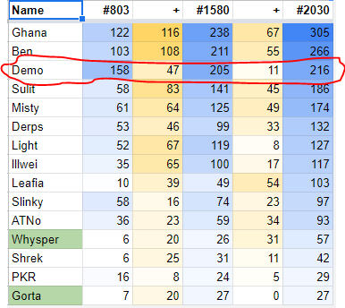

Have been at work for the past six hours, sorry I couldn’t stop this waste of time sooner.
Kinda odd that you both looked at that and neither of you saw me literally say it was a meme
Vote Count (ping me for any errors)
| Vote Target | Voted By | Votes |
|---|---|---|
| Mistyx | GGhana | 1/8 |
| GGhana | Leafia, Shrek_Gurl_12, demoknighttf2 | 3/8 |
| Leafia | Illwei, PKR | 2/8 |
| Shrek_Gurl_12 | Benjamin_Shapiro | 1/8 |
| Light | Mistyx | 1/8 |
| Whysper | SirDerpsAlot | 1/8 |
1 Like
Ahhh, I either completely missed that later post where you said it was a meme, or I glanced at it and didn’t realize it was in reference to your earlier vote. The fact that it was crossed out makes it even more likely I didn’t really see it especially since it looked like a fluff post.
So anyway, who is your highest SR now? Is it GGhana still, or someone else?
Yes, it’s still GGhana. But I am starting to see more and more of a possibility that it’s just because he’s a ToL idiot (offense intended). I’m doing something at the moment, but I’m probably going to go over yesterday’s EoD and see what was going on and reorient myself.
1 Like

I was just analyzing the post counts I’ve been taking at certain points. I see a noticeable drop in activity for Demo. He was the top poster as of post #803. Then at post #1580, his increase was only 47 compared to higher increases (e.g. 116, 108, 83) from those around his same position. Then at post #2030, an even bigger drop in activity (only 11 compared to 67, 55, 45 for those around his position). I think this drop in activity/WIM is a wolfish sign.

Sumimasen! I was watching My Hero Academia, and got carried away… Nevertheless, I’m done now.
Looking for each players reasoning behind their votes on their respective wagons…
demoknight - voting GGhana because thinks their pushes are in bad faith and their reads are unsubstantiated
PokemonKidRyan - voting Leafia because... ??? Voted first around post 17 as a... joke? Unsure.
ATNoName - voting Leafia because... they aren't very gamer I guess
Illwei - voting Leafia to save Mist?
Sulit - Voting Mist because they think tone is weird and other reasons that I'm too lazy to actually go through at 3:26 AM
Funny lil wallpost ayaya
Benjamin_Shapiro - Voting Mist because... they didn't want to vote Leafia? Really just sheeped sulit mostly
gorta - Voting Mist because...
not gonna waste my time on this since gorta is dead and it’s 3:31 AM lmfao how much of a loser do you think i am
GGhana - Voting Mist because...? I don't really know they have like no progression on Mist
Shrek_Gurl_12 - Voting PKR because they think that the 'townslip' is fake, uh... readlist is bad?
Important to me
They weren’t around for EoD, which kinda makes this post useless, otherwise it would be pretty >_>
Out of curiosity, @Shrek_Gurl_12, do you happen to have a role that will single-handedly win the game for town if you’re alive D4 or D5? :^)
ScaledSlinky - Voting Illwei because they don't like top wagons, and Illwei has been very hedgey
Lol!wallpost
SDA - Voting gorta because low content
Mist - Voting gorta for self-prez, as well as an earlier read saying that gorta was actively trying to not contribute... basically - also thought it was weird there was resistance on his wagon because "lowposting"
Leafia - Voting gorta for self-prez, essentially sheeped GGhana
Whysper - Voting gorta to save Mist and because they don't think that even if they're town that they'll do anything other than be LHF... essentially matches up with my vote
People I liked based off of this: demoknight, sulit, Whysper
People I don’t really care about based off of this: Illwei, ScaledSlinky, Mist
People I didn’t like based off of this: PokemonKidRyan, Benjamin_Shapiro, GGhana, SDA
Special Cases: Shrek_Gurl_12 - Weren’t around for EoD, seem to have strong opinions on the wagons, says they’ll do wagonomics… still waiting on these wagonomics, Leafia - Self-prez’d on gorta, but continued on with him as an exe even after she was no longer in danger of being executed with… not really any reasoning. However, see below
Other Conclusions ™: I really didn’t like the Leafia wagon at EoD, specifically PKR and ATNoName.
SDA’s read strength and push strength don’t match up whatsoever.
Whysper had about the same thought process as I did.
Only open if you're Chemist1422
I think this is the part where you confbias yourself into “Light is being serious, lockscum” :^)
1 Like
I’m here, I was doing something, sorry 'bout that (lucky you caught me at the end of it lol)
1 Like
Eh
Basically
Long story short: Leafia prob town, you’re now my strongest TR headpat
1 Like
Ahh okay. I’m going through your list. Though I think you might want to review Demo again. I’m beginning to suspect him. He’s certainly death-tunneling Ghana (who I think is town).
Demo really dropped off in activity. Occasionally making short comments here and there. I get the feeling that he’s trying to go UTR. He’s still in the top 3 posters, but that’s mostly from a big jumpstart. He’s hardly done anything since then.
The analysis at the end is not overall reads
That is analysis purely based on the vote and its reasoning
thought i had hammered this point in but i guess not
1 Like